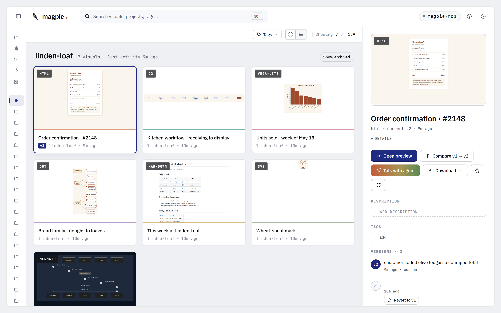
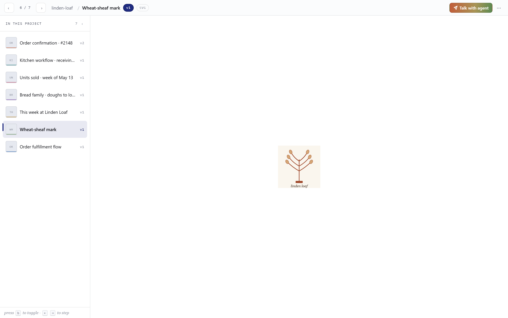
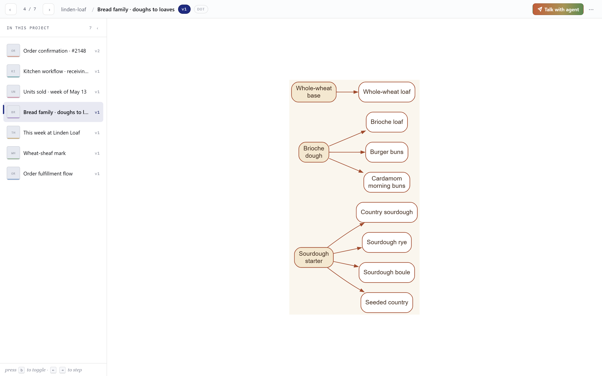
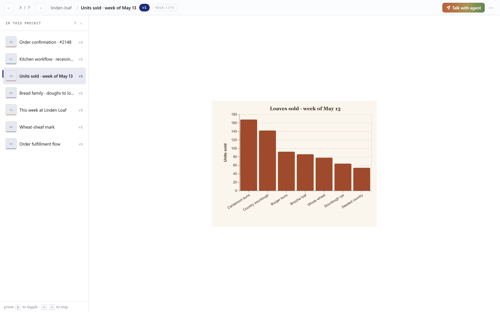
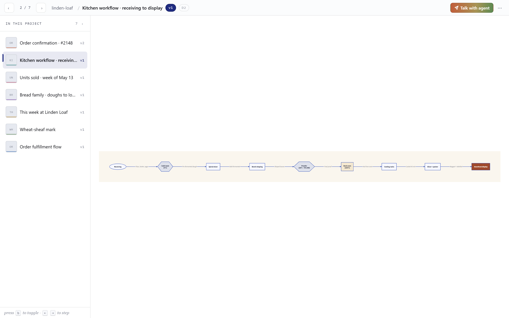
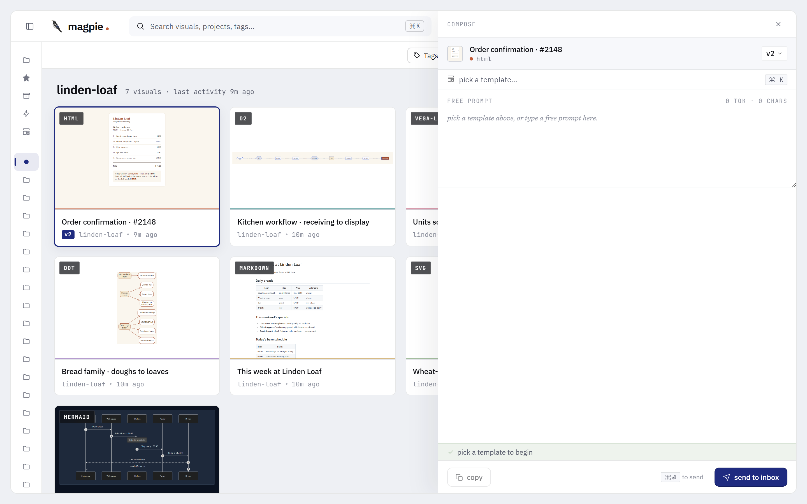

Your loyal Magpie.
Lands every visual in the nest.
Magpie is a local nest for every visual your AI hands you — mockups, diagrams, charts, status reports, plans. Library, projects, tags, versions, side-by-side compare. One Node process, your browser, your disk. No cloud. No accounts.
$ npx magpie-mcp
00 Three actors
You're not one of them — you're the reader they all serve.
The trainer
Master.
Teaches your AI Magpie's rules.
A portable skill bundled in the npm tarball. Decides which project a visual belongs to, when to iterate vs add, when to ask before filing. No code, no storage — pure judgment. Install with npx magpie-mcp --install-skill.
The trained bird
Magpie.
Tends the nest, version after version.
Your AI with the Master loaded. Brings visuals to the Nest, arranges them by project, keeps versions in order, asks before adding when uncertain.
The dumb infra
Nest.
Local. Quiet. Yours.
One SQLite file. One blobs folder. Lives at ~/.magpie/ on your disk. Holds what your Magpie brings. No LLM. No telemetry. No phone-home.
Master trains·Magpie tends·Nest keeps.
01 Install & wire to your host
Two listeners boot from one command: stdio (for your AI host) and HTTP (for your browser).
-
Boot the server.
Run
npx magpie-mcpin a terminal. It prints a dashboard URL likehttp://127.0.0.1:3737. Open that in your browser. If 3737 is taken, it auto-bumps to the next free port. -
Install the Master skill.
Run
npx magpie-mcp --install-skill. Dropsmagpie-master/SKILL.mdinto your host's skill directory (auto-detected for Claude Code · Claude Desktop). Your AI now knows the protocol. -
Get the MCP config snippet.
In another terminal:
npx magpie-mcp --print-config. It prints both Claude Code and Claude Desktop forms. - Paste into your host. Use the tab below that matches your client. Restart the host to load the server.
- Ask your AI to mock something. Try: "Mock a settings page" or "Sketch the auth flow as a diagram." The visual lands in the dashboard within a second; the URL appears in the reply.
MCP config snippet
MAGPIE_HOME=/path to pin storage to a custom directory.
Default is ~/.magpie/ — a single SQLite file plus a blobs/ tree.
Backup is copying that folder. See §12 Backup.
--install-skill ships to Claude Code + Claude Desktop today; host detection for Cursor + Cline arrives in v1.1.
02 How it works
One process, two surfaces. Your AI commands via stdio. You watch via the browser. No LLM lives in the server.
Storage
Single SQLite file at ~/.magpie/magpie.db for metadata.
Blobs (HTML, source, thumbnails) live next door under blobs/<id>/v<n>.<ext>.
Portable; copy the folder to migrate. Migrations are forward-only — see FAQ.
Renderers
Mermaid bundled offline; Markdown via marked + DOMPurify; DOT via graphviz-wasm;
Vega-Lite via vega SSR; D2 via wasm. HTML + SVG render directly. PNG thumbs via puppeteer-core + system Chrome.
No network
Offline-capable. The server doesn't fetch anything from the internet — Vega-Lite specs must
carry inline data ("data": {"values": ...}).
Zero telemetry, zero accounts.
03 Seven supported formats
Your AI picks a format that fits the request. Magpie renders + thumbnails each one. All offline. All side-by-side comparable.

HTML html
.html · sandboxed iframeUI mockups, dashboards, landing pages. Rendered in a sandboxed iframe (no allow-same-origin).

Mermaid mermaid
.mmd · bundled v11Flowcharts, sequence, state, ER, gantt. Rendered offline — no CDN.

SVG svg
.svg · directIcons, logos, single vector elements. Served as image/svg+xml.

Markdown md
.md · marked + DOMPurifyProse, READMEs, design notes. Code blocks syntax-highlighted (highlight.js).

Graphviz / DOT dot
.dot · graphviz-wasmDirected and undirected graphs. digraph / graph source.

Vega-Lite vega-lite
.vl.json · vega SSRCharts, data viz. JSON spec with inline data (no remote fetches).

D2 d2
.d2 · @terrastruct/d2 (wasm)Modern diagram-as-code. Clean syntax, good for system maps.
plantuml · excalidraw
offline + pure-JS ruleJVM dep / canvas-heavy — break the offline rule. Not on the roadmap.
04 The dashboard
Three regions: sidebar (filters), grid (your visuals), drawer (the selected one). View-only — entity creation goes through MCP.

Sidebar filters
- Library — All / Starred / Archived counts.
- Projects — flat list with visual counts. Click to filter.
- Tags — every tag in the library, sorted by use. Click multiple → AND.
- Type — filter by format (html, mermaid, svg, …).
- Source — which generator made it (Stitch, Figma, Mermaid Chart, etc.).
The drawer
- Open preview — full-page render in a unified shell.
- Compare v(N-1) ↔ vN — opens side-by-side or overlay.
- Talk with agent — copy a templated prompt that references this visual (see §07).
- Download — PNG / SVG / source.
- Star, Archive, Re-render thumbnail.
- Tags — inline editor; Versions list with revert.
Search
Top bar search (or / to focus, ⌘K to reset) matches title, project, and tag. Filters from the sidebar still apply on top.
Empty state · seed scaffold
Brand-new install? The empty-state CTA loads a 5-visual seed bundle (one per format) so you have something to browse while you wire up your AI host. Dismissible · idempotent · doesn't run twice.
Dark mode

05 Compare versions
When your AI iterates a visual, every version sticks. Compare them in two modes.

Shell states
The unified shell decides what to render based on the picker selection:
URL-driven: /v/<id> for single, /compare/<id>?a=N&b=M&mode=sxs for compare.
Bookmark a specific compare; reload preserves picker.
06 Iterate & revert
Each refinement creates a new version. Old versions never disappear.
- Ask your AI to tweak a visual ("make it dark", "remove the sidebar"). It calls
iterate(visual_id, content, message?). - The new version becomes current.
v(N-1)stays accessible. - From the drawer, click any version to preview it. Click Revert to v{n} to make an older version current.
- Reverting doesn't delete history — it just changes which version the thumbnail and default preview point at.
content_path instead of inline content.
Same result; saves tokens. Path must live under your project root (or MAGPIE_CONTENT_ROOT if set). Magpie never moves, edits, or deletes the source — it reads + copies.
07 Talk with agent
Hand a visual back to your AI with a templated prompt — eight presets, one custom. Copy to clipboard, paste into chat. No MCP roundtrip needed.

Iterate
Draft the next version with a specific change.
Variants
Three options exploring the same intent.
Explain
Walk through decisions in plain language.
A11y audit
WCAG findings — not a rewrite.
Responsive check
Desktop ⇿ mobile parity pass.
Dark mode port
Light theme over to dark, tokens preserved.
Simplify
Cut to the essential moves.
Add data
Real values in place of lorem.
Variables
Presets resolve these tokens against the selected visual:
{{visual_id}} · {{title}} · {{project}} · {{type}} · {{version}} · {{preview_url}} · {{magpie_ref}}.
magpie://visual/<id> reference travels with the prompt. Your AI reads the visual via the MCP resource — same trust boundary as any other MCP call.
08 Keyboard shortcuts
Press ? from any dashboard view to see them all.

09 MCP tool surface
Your AI has 14 tools and 3 resources. You don't call them directly — you ask in plain English, and the Master skill picks the right tool.
| Tool | What it does | Phase |
|---|---|---|
add_visual | Save a new mockup / diagram / chart / doc as v1 of a new entity. | 1 |
iterate | Add a new version to an existing visual. Supports per-version description. | 1 |
create_project | Create an empty project (usually optional — add_visual auto-creates). | 1 |
list_projects | Show all projects with counts and last activity. | 1 |
list_versions | Full version history for a visual. | 1 |
find_visuals | Search across the library. Filters by tag, source, type, project, starred. | 2 |
compare | Open the compare view for two versions. | 2 |
open_preview | Return a preview URL for an existing visual. | 2 |
update_visual | Rename, retag, star, mark final. | 2 |
update_project | Rename a project, change type, edit description. Includes rename-and-merge semantics. | 2 |
archive_visual | Soft-archive a visual (UI restorable). | 3 |
archive_project | Archive a whole project at once. | 3 |
merge_projects | Move all visuals from src into dst; archive src. | 3 |
read_inbox | Read pending visuals from external generators (Stitch · Figma · etc.) before nesting. | 3 |
MCP resources
Read-only library inspection from your AI:
magpie://library · magpie://project/<name> · magpie://visual/<id>[/v<n>].
10 Export
Take any visual offline. Three single-file forms plus a project zip.
- PNG — the rendered thumbnail at full size.
- SVG — for vector formats (mermaid, svg, dot, vega-lite, d2). Crisp at any size.
- Source — the original HTML / .mmd / .svg / .md / .dot / .vl.json / .d2 file.
- Project zip — every visual in a project, latest version of each, with a manifest.
Find these on the drawer ("Download") or via dashboard project menu ("Export project").
11 Backup & restore
Two ways to back up. Both produce a single artifact you can store wherever you store everything else.
The folder copy
Everything Magpie holds is at ~/.magpie/ (or wherever MAGPIE_HOME points). Quit Magpie, copy the folder, you're done.
The CLI
$ npx magpie-mcp --backup
→ wrote magpie-backup-2026-05-19.tar.gz (12.4 MB)Writes a USTAR + gzip archive. Zero new dependencies. Internally runs a WAL checkpoint first so the snapshot is consistent.
Restore
Extract the archive into ~/.magpie/ (or your MAGPIE_HOME), reboot Magpie. Migrations are forward-only — restoring an older snapshot replays missing migrations on next boot. There is no rollback path by design; downgrade = restore from an older backup.
12 FAQ & not-goals
Where is my data?
~/.magpie/ on your machine. SQLite metadata + filesystem blobs. Nothing leaves the host.
Override with MAGPIE_HOME=/path.
What is the Master skill, exactly?
A portable Agent Skill — a markdown file with frontmatter that teaches your AI Magpie's protocol. Ships in the npm tarball at skill/magpie-master/SKILL.md. npx magpie-mcp --install-skill drops it into your host's skill directory (Claude Code · Claude Desktop today). The MCP server itself also carries a layered fallback string so untrained hosts still work — the skill is the high-resolution version.
Does Magpie generate visuals?
No. Your AI writes the content; Magpie organizes, renders, versions, and serves it. There is no LLM in the server.
Can I use it without Claude?
Yes — any MCP-aware host works (Claude Code, Claude Desktop, Cursor, Cline, custom clients). The dashboard alone is also useful as a viewer for content you produce by hand: drop files into the HTTP API directly.
Multiple browsers / multiple machines?
The dashboard binds to 127.0.0.1 by default — local only. To share, change MAGPIE_BIND.
For multi-machine, copy ~/.magpie/ (or the backup archive); there's no sync.
I ran npx magpie-mcp in two folders — why two HTTP ports?
Magpie runs one canonical process per MAGPIE_HOME. Subsequent npx magpie-mcp invocations in the same home become facades that multiplex MCP traffic to the existing canonical over a named pipe — they bind zero HTTP ports.
You see two ports only when you have two different MAGPIE_HOME values. Each home gets its own lock, IPC pipe, and HTTP listener. Example: repo A pins MAGPIE_HOME=./.tmp-home in its .mcp.json and gets canonical A on :3737; repo B with no override falls back to ~/.magpie/ and gets canonical B on :3738 (auto-bumped because :3737 was taken).
The facade log line connected as facade to canonical pid=N http=:M is informational — it tells you where the canonical's dashboard lives, not that the facade opened a port.
To merge into one canonical (one port): set the same MAGPIE_HOME in both shells before running npx magpie-mcp. To kill a stale canonical: read the pid from $MAGPIE_HOME/magpie.lock and terminate it.
What about migrations and breaking changes?
Migrations are forward-only forever (R21). The runner detects gaps and downgrades at boot. The downgrade path is restore-from-backup — see §11 Backup.
Does Magpie touch my source files?
No. content_path is read + copy only — bytes go from your named path into the next blob slot. The origin is left exactly where it was. Magpie never moves, edits, or deletes your source.
Things Magpie will not do
- Run an LLM. The server is dumb infra.
- Cloud sync, share links, public gallery.
- Auto-tag with AI.
- Multi-user accounts.
- Ship as Electron / Tauri. Bundled web only.
- Real-time collab / infinite canvas / drawing.
Browser support
Chrome / Chromium-based browsers only at v1.0. The render pipeline uses system Chrome via puppeteer-core, and the dashboard targets the same surface. Firefox + Safari are deferred indefinitely.